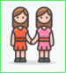
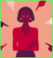
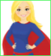
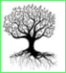

Here you can find other website who talks about feminism.
There are created by my group from MMI.
Féminisma of Mélina
Et féminisme of Julien
Parlons Féminisme of Hugo
Women's Work of Lillian

Femina of Julie
Femini'Fight of Alexis

The Victim's of Nafissa
Women's Power of Morgane

Heroines of today of Mathieu

Les Origines du féminisme en Europe of Enzo
inovation in feminism of Eden

 Femini'Fight of Alexis
Femini'Fight of Alexis